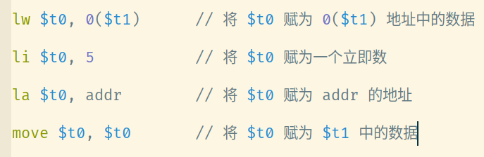
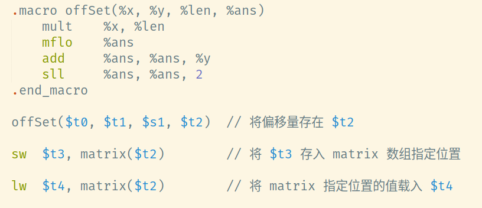
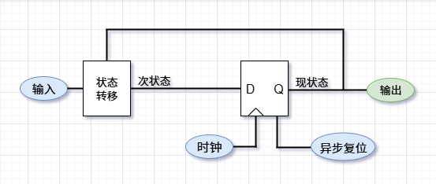

⌈BUAA CO⌋ pre 记录
翻涌数字 Pre_roll
题意：
给定位宽
的输入 ，代表 个位宽为 的数据 。同时令每一个 ，对 4'd16取模后，按原顺序拼接输出。
考场上先开的这个题。只需要先设置
wire 型数据
input 中的数据，再对
Verilog 语法的不熟悉，写的过程非常不顺利。以下是一些需要记住的语法规则：
-
assign的作用对象为wire型，称为连续赋值，属于结构描述。不能放在always和initial块里面；而过程赋值的作用对象为
reg型，必须放在always和initial块里面。 -
阻塞赋值（
=）与c++中的赋值语句类似，更新完被赋值数的值才会执行接下来的操作。而非阻塞赋值（<=）操作会等到全部语句计算完后统一更新。 -
Verilog中位选择[msb:lsb]必须是常量表达式。因此a[i*4 + 3 : i*4]这种写法是非法的。然而我们可以写a[i*4 + 3 -: 4]或者a[i*4 +: 4]。
MIPS_Submatrix
题意：
读入
个整数代表一个 的矩阵 .再读入子矩阵的左上坐标以及长宽数据。输出子矩阵内的值。如果超出边界，改为输出 Out of bounds。
主要考察的其实还是 MIPS 的基本语法。除了需要对基础的语法更加熟悉之外，还要尽量提升自己代码的可读性。
-
一些与赋值有关，容易混淆的命令：

-
关于数组的存取操作。一般我们可以写一个宏定义来快速计算某下标对应的偏移量。比如图中的宏可以用来计算列数为
%len的二维数组中指定坐标的偏移量，进而进行存储和载入的操作。
这里出现了乘法的写法。涉及
mult和mflo两个命令，需要特殊记忆。
Logisim_Sokoban
题意：
初始时玩家在
地图上的 处。地图上有若干障碍。除了 clk和reset信号（异步复位）外，每时刻还会收到dx和dy信号。假设玩家在
位置，收到信号时，会尝试移动到 位置。若目标位置超出地图或为障碍，则留在原位置，将 flag置高个周期。当前位置为 时， out输出为，否则为 。
考场上没有成功搭出来这道题。是课下补题时做的。
根据经典的 Moore 状态机的框架来搭就可以。如下图所示：

状态转移是电路的核心部分。此处我用一个八位二进制数表示此状态下的
dx，dy 一起作为状态转移电路的输入。
转移电路中先用一个四位加法器计算出 x + dx 和 y + dy （注意要先用 Bit Extender 将 dx 和 dy 同样扩展为
是否为合法位置，用若干个比较器即可完成。（需要注意到是，如果选用六位二进制数表示状态，则须将比较器的属性设为 Unsigned，否则最高位会被识别为符号位）
如果是合法位置，将 x + dx 和 y + dy 拼接成八位二进制数输出，flag 置 0 ；否则将输入的数再输出，flag 置 1。
于是就完成了。其实都算不上一个难题，只能怪自己没好好学。